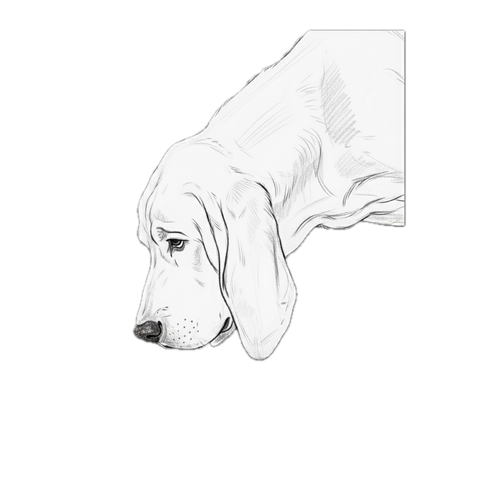

SpoorID
Analyze animal scats and learn about wildlife.

SpoorID makes identifying animal scat simple and reliable. Snap a photo and the app analyzes it instantly, using both the image and your location to improve accuracy. Save your records, see them neatly organized, view them on the map, and gain clearer insight into the wildlife around you.